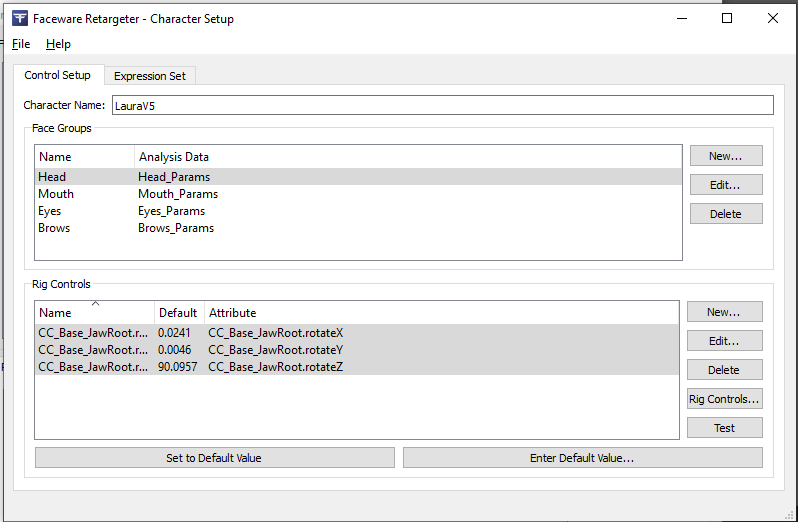
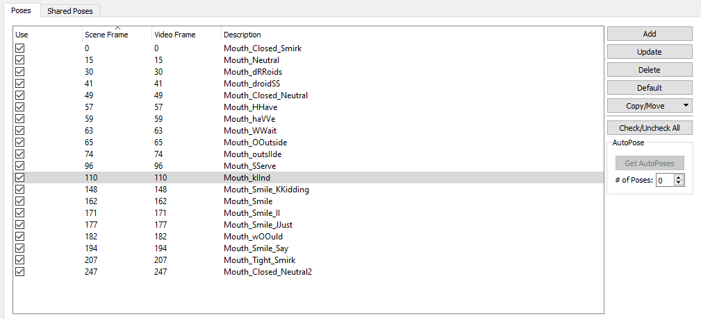

Dynamic Digital Humans Documentation
DDH Face Animation
This process generates the facial performance that combines the animation of the facial geometry with the playback of the image processed video on top of it. It also combines the performance projection and UV image together by fixing it onto the head and mouth geometry.
1.1 Setting up textures for DDH
1. Import DDH Head and DDH Mouth
2. Assign DDH Head display material to Head_Geo
3. Assign DDH Mouth display material to Mouth_Geo
4. Position UV projection (of the DDH face projection video) to fit the eyes and forehead
- Make visible and assign head projection texture that was generated in After Effects
- Render head projection file
5. When creating a new character, save a .jpeg file of the neutral position (from step 2) and use that as the alignment position for the projector
1.2 Faceware retargeting
1. Download and install FaceWare Pro (to use AI pose database tools)
i. Open Faceware Retargeter
ii. Go to Faceware->Advanced->Character setup->New
a. Name the character Laura V5
b. Delete Head_Params from Face Groups
c. Select mouth in Face Groups
- Click Rig controls
- Select head blendshapes
- Click Update to select nodes that control the mouth
- Click Add Selected
d. Select CC_Base_JawRoot bone
- Click Update in Rig Controls
- Select rotation values from Rig Controls
- Click add selected
- Select values in Rig Controls and set default values
e. Select the eyes in Face Groups
- Select eye blend shapes in Rig Controls and click update
f. Select both (L/R) eye bones
- Click Update in Rig Controls
- Highlight rotation values and click Add Selected
- Click Set Default Values in Rig Controls
g. Select eyebrows in Face Groups
- Select Head Geo and click Update in Rig Controls
-Highlight eyebrows shapes and click Add Selected
iii. Save file using the naming convention Faceware/[CharacterName_CharacterSetup]
iv. Close Character Setup
2. Faceware/Character Setup
i. Create Shared Poses
a. Go to Advanced->Preferences->Create (if this is the first time)
b. Create a directory in the Faceware folder
c. Create a shared_poses.fwsp file
d. Click use Shared poses when retargeting

ii. Go to Performance->Open
a. Select performance file (FWR analyzer file)
b. Select character setup file
c. Select Shared Poses database
d. Enable Import video and audio and click OK
iii. Move Faceware video besides the face mesh
a. Replace video with video results to display tracking information
- This helps identify if there are issues with the analyzer vs tracking part of the process
b. Scale the face video to match the size of the head mesh
1.3 Setting up textures
1. Locate DDH Head_Projection and DDH Fill_Projection textures that were generated in the image processing step
2. Select DDH Head_Projection and assign it to the character's head
3. Select the file and switch to the new projection take from the attributes editor
i. Right click and refresh swatch
ii. Scrub through the animation and ensure that the animations match
4. Assign DDH Head_Projection to the eyes
i. Select the eyes by clicking on faces
a. For the first character
- Create layered shader and name it DDH_Eye
- Map head projection to DDH_Eye
1.4 Retargeting
1. Change camera focal length to 60
NOTE
Make sure your animation start time matches the Faceware Analyzer asset's imported animation frame (0 or 1)
2. Animate the eyes
3. Open the Shape editor
i. Select the eye joints and rotate them to match the correct eye position
ii. Animate morph targets
a. Start with large movements and then move on to the more granular movements
b. In Faceware Poses, select poses with greater changes
c. Label poses in the description section with accurate names (for use with shared poses)
d. Navigate to the shared poses shelf and select all shared poses to use the poses that were already stored
e. Turn selection highlighting off to get a better view of the textures
4. Animate the eyebrows
i. Turn on selection highlighting to follow contour of polygons
ii. Use A (Morph shapes first) tweak positions with older morph targets
iii. Use Prune and Smoothing to remove jitters
5. Animate the mouth
i. Start with Jaw shape positions
ii. Reposition the mouth to fit the shapes
iii. Animate the details
iv. Use A (Morph shapes first) tweak positions with older morph targets
v. Use Prune and Smoothing to remove jitters
vi. Click Retarget to animate the in-betweens
1.5 Use projected image for image processing rendering
1. Open Hypershade
2. Select DDH Head_Projection material
3. Import HeadProjection_Fill and replace sequence
i. Create file texture node
ii. Load the HeadProjection_Fill sequence
iii. Enable Use Image Sequence
4. Connect to image input
5. Break connection of the mouth mask
1.6 Rendering geometry to texture
1. Select the DDH Image Processor and render geometry to texture from Maya shelf
2. Select Head_Geo from the outliner and click Add Geometry
3. Remove other associated geometry (Head_GeoShapeOrig1)
4. Rename the head
5. Change the resolution to 2048
i. Enable Extend Edges
ii. Enable Generate Normal Map and use default settings
iii. Enable Generate Specular Map and use default settings
6.Change the step count to a high number to test a few frames (for the first time)
7. Change the output directory to DirectoryWhereMayaIsStored\images\Takes\NameOfTake and click Bake
8. Select Mouth_Geo from the outliner and click Add Geometry
i. Remove other associated mouth geometry (Mouth_GeoShapeOrig1)
9. Rename the Mouth
10. Change resolution to 512
i. Enable Extend Edges
ii. Enable Generate Normal Map and set blur to 50
11. Change the step count to a high number to test a few frames (for the first time)
12. Once the frames are verified, change the frame range options to Step by 1 and click Bake
1.7 Export the head animation to Unity Engine
1. Bake animations from expressions
i. Select the mouth geometry and blendshapes input nodes
ii. Open the graph editor
a. Select curves and bake the animation
2. Export geometry for facial animation
i. Select the geometry you want to export to Unity
a. Include the head and mouth geo
ii. Select the root bone
iii. Export to FBX
a. Enable animations
b. Enable deformed models (skins and blendshapes)